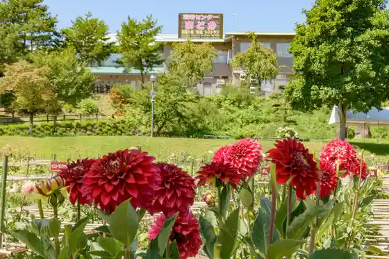
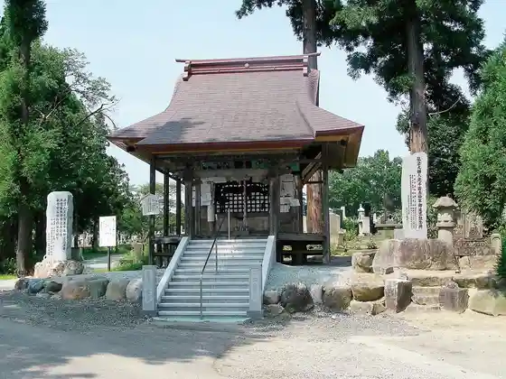
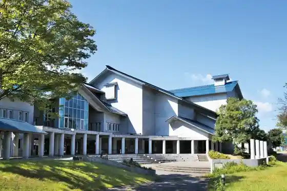
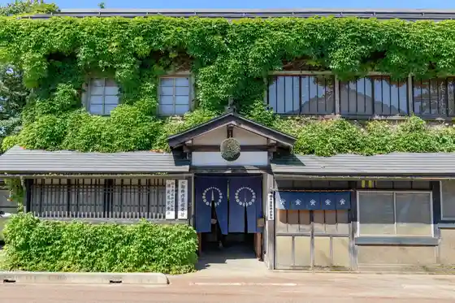

Kawanishi Onsen Kawanishi Yoku Yoku Center Madoka
Kawanishi, Yamagata · 0238-42-4126 · Official / source link

Matsuhikari Yama Omitsu In (Shingonshu) / Oitama Sanju San Kannon Dai 14 Ban Chi Rei Kannon
Kawanishi, Yamagata · Official / source link

Chihitsu Do Bunko Kawanishi Furendorii Plaza
Kawanishi, Yamagata · 0238-46-3311 · Official / source link

Taruhei Shuzo
Kawanishi, Yamagata · 0238-42-3101 · Official / source link

Mari Sui Kogei Kan
Kawanishi, Yamagata · 0238-42-3101 · Official / source link
Komatsu Ko Dai Shrine
Kawanishi, Yamagata · Official / source link
Shinzan Shrine (Komatsu Joshi)
Kawanishi, Yamagata · 0238-42-2111 · Official / source link
Harada Joshi
Kawanishi, Yamagata · 0238-42-6668 · Official / source link
Tenjin Mori Burial Mound
Kawanishi, Yamagata · 0238-27-1166 · Official / source link
Shinzei Sojo no Kuyo to
Kawanishi, Yamagata · 0238-42-6668 · Official / source link
Hachimanjinja Honden (Kawanishi Su Shima)
Kawanishi, Yamagata · Official / source link
Suwa Shrine (Kawanishi)
Kawanishi, Yamagata · 0238-42-4612 · Official / source link
Jonen Tera
Kawanishi, Yamagata · Official / source link
Kawanishi Ei Komatsu Ski Area
Kawanishi, Yamagata · 0238-27-1169 · Official / source link
Shita Komatsu Kofun Gun
Kawanishi, Yamagata · 0238-27-1166 · Official / source link
Toyo Tera
Kawanishi, Yamagata · Official / source link
Taka Toya Yama
Kawanishi, Yamagata · 0238-42-6668 · Official / source link
Ryuzo Sakura
Kawanishi, Yamagata · Official / source link